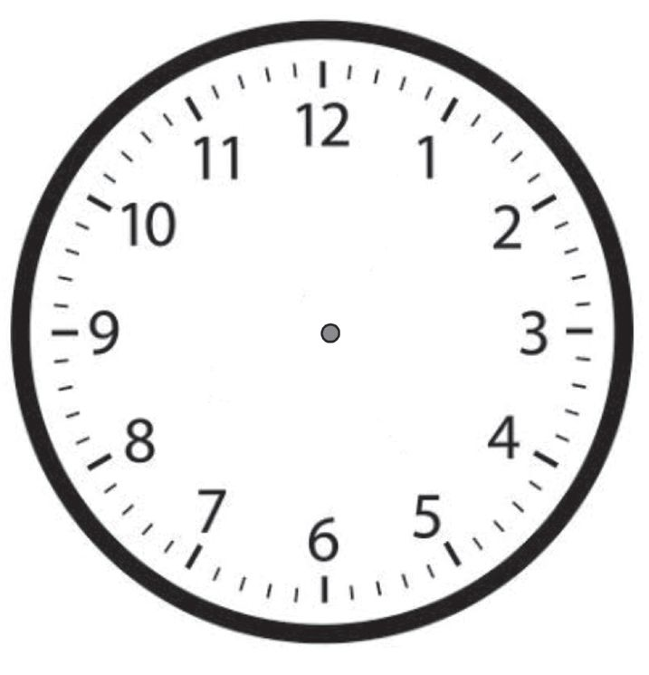
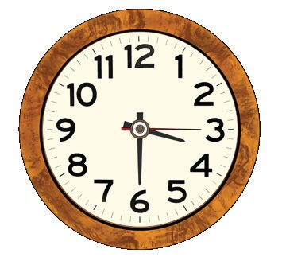
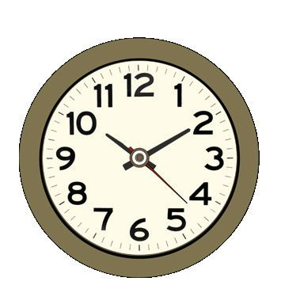

ഡിജിറ്റൽ ക്ലോക്കിലെ അടുത്ത സമയം നിങ്ങൾ എഴുതൂ.
മുകളിലെ ചിത്രത്തിലെ സമയം ശ്രദ്ധിച്ചോോ ? എന്തെല്ലാം കാര്യയങ്ങൾ
മനസ്സിലായി ?
9 മണി 29 മിനിറ്റ് 59 സെക്കൻ്റ് കഴിഞ്ഞുളള സമയം എത്രയാണ് ?
.............. മണി .............. മിനിറ്റ് .............. സെക്കന്റ്
29 മിനിറ്റ് 59 സെക്കന്റ് കഴിഞ്ഞുളള സമയം
നോോക്കൂ. എത്രയാണ് ? 30 മിനിറ്റ്.
60 സെക്കൻ്റ്
1 മിനിറ്റ്
ഇതിൽ നിന്നും എന്താണ് മനസ്സിലായത് ?
എനിക്ക് മനസ്സിലായത്
സെക്കൻ്റും മിനിറ്റുംം
നിധി സ്കൂളിൽ
നിധി സ്കൂളിലെത്തിയ സമയം നോോക്കൂ...
സ്കൂളിലെത്താൻ നിധി എത്ര സമയം യാത്രചെയ്തു ?
ഞാൻ കണ്ടുപിടിച്ചത്
ഡിജിറ്റൽ
ക്ലോോക്ക് നോോക്കി
കൃത്യയസമയം
കണക്കാക്കണേ...
എണ്ണാൻ വേണ്ടിവന്ന സമയം ?
കൂട്ടുകാർ എണ്ണാനെടുക്കുന്ന സമയം പട്ടികയിലെഴുതൂ.
പേര്
സമയം
എണ്ണുന്നതിനെടുത്ത കുറഞ്ഞ സമയം
കൂടുതൽ സമയം
67
Page 68
Figure fig_ch05_p068_01 (Page 68)
ഗണിതം സ്റ്റാൻഡേർഡ് - IV
എന്റെ സമയം
നിങ്ങൾക്ക് ഒരു മിനിറ്റിനുള്ളിൽ ചെയ്യാൻ കഴിയുന്ന കാര്യയങ്ങൾ എഴുതൂ...
•
•
•
•
•
•
നടക്കാം... സമയം നോാക്കാം...
വട്ടം ചുറ്റാം
വട്ടം വട്ടം ചുറ്റുന്നേ
മണിക്കൂർ സൂചി ചുറ്റുന്നേ
ക്ലാസിൻ്റെ ഭിത്തിയോോട് ചേർന്ന് ഒരു രണ്ടുവട്ടം ചുറ്റീടിൽ
വട്ടം നടക്കൂ. നടക്കാനെടുത്ത സമയം പൂർത്തിയാകും ദിനമൊാന്ന്
സ്റ്റോോപ്പ് വാച്ചുപയോോഗിച്ച് കണക്കാക്കൂ... വട്ടം വട്ടം ചുറ്റുന്നേ
മിനിറ്റ് സൂചി ചുറ്റുന്നേ
എത്ര വട്ടം ചുറ്റേണം
പൂർത്തിയാകാൻ ദിനമൊാന്ന് ?
പസിൽ കോർണർ
തന്നിരിക്കുന്ന സംഖ്യയ നോോക്കൂ.....
സംഖ്യയയിലെ ഏതെങ്കിലും രണ്ട് വര മാത്രം മാറ്റി
വരച്ച് എഴുതാവുന്ന ഏറ്റവും വലിയ സംഖ്യയ
എന്താണ് ?
101
1 0 1 - ലെ പൂജ്യയത്തിലെ ഒരുവര മാത്രം എടുത്ത് പൂജ്യയത്തിൻ്റെ
നടുക്കുവച്ചു. എത്ര കിട്ടി ? 1 9 1
191 നേക്കാൾ വലിയ സംഖ്യയകൾ ഉണ്ടാക്കാൻ പറ്റുമോോ?
തുടക്കം മുതൽ ഒടുക്കം വരെ
ചിത്രം നോാക്കൂ. വരച്ചുതുടങ്ങിയാൽ തീരുന്നതുവരെ പെൻസിൽ
കടലാസിൽ നിന്നും എടുക്കാൻ പാടില്ല. വരച്ച വരയിലൂടെ വീണ്ടും
വരയ്ക്കാനും പാടില്ല. വരയ്ക്കാൻ എത്ര സമയം എടുത്തു?
............... സെക്കന്റ്
ഏതെങ്കിലും ഒരു
മൂലയ്ക്ക് നിന്നും
തുടങ്ങണം.
നമുക്കും ക്ലോക്ക്
നിധിയുടെ ക്ലാസിലെ കുട്ടികൾ ക്ലോാക്ക് ഉണ്ടാക്കുകയാണ്.
നിങ്ങൾ ഉണ്ടാ
ക്കിയ ക്ലോോക്ക്
കണക്കുപെട്ടി
യിൽ വയ്ക്കണേ.
നിർമ്മാണം പൂർത്തിയാക്കാൻ എടുത്ത സമയം മിനിറ്റിൽ എഴുതൂ.
.................. മിനിറ്റ്
അമ്പമ്പോ!!
2 മണിക്കൂർ
= 120 മിനിറ്റ് !
= 7200 സെക്കന്റ് !!
നിധി ഉണ്ടാക്കിയ ക്ലോക്ക് നോക്കൂ.
സെക്കൻ്റ് സൂചി 9 ൽ നിന്ന് 12 ൽ
എത്താനെടുക്കുന്ന സമയം ...........
സെക്കന്റാണ്.
ക്ലോോക്കിലെ സമയം എഴുതൂ ..........മണി ....... മിനിറ്റ് .............. സെക്കന്റ്
മണിക്കൂർ സൂചി ഒരുവട്ടം
കറങ്ങാൻ വേണ്ട സമയം ?
............... മണിക്കൂർ
മിനിറ്റ് സൂചിയോാ?
............... മണിക്കൂർ
സെക്കന്റ് സൂചി ?
............... മിനിറ്റ്
ഏറ്റവും വേഗത്തിൽ കറങ്ങുന്ന സൂചി ഏതാണ് ?
70
ക്ലോാക്കിലെ മൂന്ന്
സൂചികളിൽ ഏറ്റവും
വണ്ണം കുറഞ്ഞതും
നീളം കൂടിയതുമായ
സൂചിയാണ്
സെക്കന്റ് സൂചി.
Page 71
Figure fig_ch05_p071_01 (Page 71)

Figure fig_ch05_p071_02 (Page 71)

Figure fig_ch05_p071_03 (Page 71)

Figure fig_ch05_p071_04 (Page 71)
നേരമായി
ക്ലോാക്ക് നോാക്കൂ... സമയം എഴുതൂ.
ചിത്രം
സമയം
മണിക്കൂർ
മിനിറ്റ്
സെക്കന്റ്
സമയം ക്ലോാക്കിൽ വരച്ച് ചേർക്കൂ...
12 മണി
50 മിനിറ്റ്
30 സെക്കന്റ്
6 മണി
5 മിനിറ്റ്
16 സെക്കന്റ്
പസിൽ കോർണർ
ഒരു മണിക്കൂർ മുമ്പ് സമയം 10 മണി 15 മിനിറ്റായിരുന്നു.
രണ്ടര മണിക്കൂർ കഴിഞ്ഞാൽ സമയം എത്രയാകും ?
ഈ ടാപ്പിൽ നിന്നും ഒരു സെക്കന്റിൽ ഒരു
മില്ലിലിറ്റർ വെള്ളം വീതം ഒഴുകിപ്പോോകുന്നുണ്ട്.
10 മിനിറ്റുകൊൊണ്ട് എത്ര മില്ലിലിറ്റർ വെള്ളം
ഒഴുകിപ്പോോകും?
വെള്ളം
പാഴാക്കല്ലേ
ഞാൻ കണക്കാക്കിയ രീതി
സെക്കന്റുകൾ മാത്രം
സെക്കന്റ് സൂചി 12 ൽ നിന്നും 1 ൽ എത്താൻ
എടുക്കുന്ന സമയം
സെക്കന്റ് സൂചി 12 ൽ നിന്നും 2 ൽ എത്താൻ
എടുക്കുന്ന സമയം
സെക്കന്റ് സൂചി 12 ൽ തുടങ്ങി 15 സെക്കന്റ്
ആകുമ്പോാൾ ഏത് സംഖ്യയക്ക് നേരെ എത്തും?
സെക്കന്റ് സൂചി വട്ടത്തിന്റെ പകുതി ഭാഗം
കറങ്ങാൻ വേണ്ട സമയം?
പാചക മത്സരം
സ്കൂളിൽ പണ്ട് പഠിച്ചിരുന്നവർ ഒത്തുചേർന്നപ്പോാൾ
പലതരം പായസമുണ്ടാക്കി.
പാചകം തുടങ്ങിയ സമയമാണ് ക്ലോോക്കിൽ.
ഞാൻ 2 മണിക്കൂർ
10 സെക്കന്റ് കൊൊണ്ട്
തീർത്തു
രണ്ടുമണിക്കൂർ
ആകുന്നതിന് 20 മിനിറ്റ്
45 സെക്കന്റ് മുമ്പ് എന്റെ
പാചകം കഴിഞ്ഞു
എനിക്ക് 132 മിനിറ്റ്
35 സെക്കന്റ് മതിയാ
യിരുന്നു
എനിക്ക്
ഒരു മണിക്കൂറുംം
50 മിനിറ്റുംം 25 സെക്കന്റും
വേണ്ടി വന്നു.
ഓരോോരുത്തരുംം ഉണ്ടാക്കിത്തീർന്ന സമയം അടുത്തുള്ള ക്ലോോക്കിൽ വരയ്ക്കൂ.
പാചകത്തിന് വേണ്ടി വന്ന ഏറ്റവും കൂടുതൽ സമയം
ഏറ്റവും കുറവ് സമയം
73
നോോട്ടീസ് ബോോർഡ്
ഡിസംബർ 22
ദേശീയ ഗണിതശാസ്ത്രദിനം
ദേശീയ ഗണിതശാസ്ത്രദിനാഘോോഷത്തിന്റെ മുന്നോോടിയാ
യുള്ള മത്സരങ്ങൾ 20.12.2025 ന് നടക്കും. മത്സരിക്കാൻ
താൽപര്യയമുള്ള കുട്ടികൾ ഇന്ന് ഒന്നരയ്ക്ക് മുമ്പായി ക്ലാസ്
അധ്യാാപകർക്ക് പേര് കൊാടുക്കണം.
15.12.2025
മത്സരങ്ങൾ
ഗണിതക്വിസ്
ഗണിതപസിൽ
20.12.2025
പാറ്റേൺ രചന
ദിവസം, മാസം, വർഷം
എന്ന ക്രമത്തിലാണ്
തീയതി എഴുതുന്നത്.
മാസം, ദിവസം, വർഷം
എന്ന ക്രമത്തിലെഴുതുന്ന
രീതിയുമുണ്ട്.
പേര് കൊൊടുക്കേണ്ട അവസാന തീയതി ഏതാണ് ?
സബ്ജില്ലാമത്സരം 1.1.2026 ൽ ആണ്.
74
സ്കൂൾമത്സരം കഴിഞ്ഞ് എത്രാമത്തെ ദിവസമാണ് സബ്ജില്ലാമത്സരം
നടക്കുക ?
സ്കൂളിൽ നിന്നും രാവിലെ 5:30ന് വിനോോദയാത്രയ്ക്ക്
പുറപ്പട്ട ബസ്സ് ജില്ലയിലെ വിനോോദ സഞ്ചാരകേന്ദ്രങ്ങൾ സന്ദർശിച്ച്
വൈകിട്ട് 5:30ന് സ്കൂളിൽ തിരിച്ചെത്തി. യാത്രയ്ക്കെടുത്ത സമയം എത്ര?
2 മണിക്കൂർ സൂചി 7ൽ നിന്നുതുടങ്ങി 3ൽ എത്താൻ എടുക്കുന്ന സമയം
എത്ര?
3 സെക്കൻ്റ് സൂചി 5ൽ തുടങ്ങി 11ൽ എത്താനെടുക്കുന്ന സമയം ...............
സെക്കൻ്റ് ആണ്. ഇത് .................... മിനിറ്റാണ് ?
4 2 മണിക്കൂർ മുമ്പ് സമയം ഒൻപതര ആയിരുന്നു. മൂന്നരമണിക്കൂർ കഴി
ഞ്ഞാൽ സമയം എത്രയാകും?
5 ജനുവരി മാസത്തെ ആദ്യയ വെള്ളിയാഴ്ച രണ്ടാം തീയതിയാണ്. വെള്ളി
യാഴ്ച വരുന്ന മറ്റ് തീയതികൾ ഏതെല്ലാമാണ് ?
6 ഏഴാം തീയതി വ്യാഴാഴ്ച ആണെങ്കിൽ പതിനേഴാം തീയതി ഏത് ദിവ
സമാണ് ? 27-ാം തീയതി ഏത് ദിവസമാണ് ?
7 സമയം എഴുതൂ...